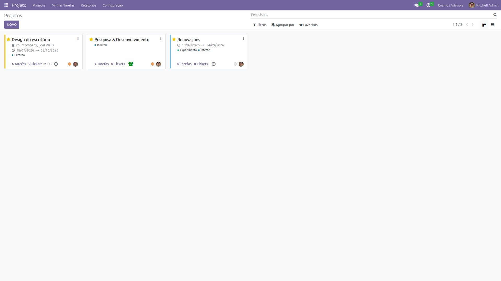

Visão Geral
O que é um Projeto no Odoo
O módulo de Projetos do Odoo gerencia tarefas, prazos e recursos. É ideal para empresas de serviços como a Cosmos Advisors.
Permite acompanhar progresso, controlar horas trabalhadas e medir produtividade por projeto.
| Estágio | Significado |
|---|---|
| A Fazer | Projeto planejado, ainda não iniciado |
| Em Andamento | Trabalho em progresso |
| Concluído | Projeto finalizado |
Visão Kanban
Acompanhe projetos como cards

Cada card mostra:
- Nome do Projeto — Título
- Responsável — Quem lidera
- Prazo — Data de início e fim
- Tarefas — Número de tarefas
- Tickets — Chamados vinculados
Passo a Passo
Como criar um projeto
Acessar Projetos
No menu superior, clique em Projeto. A visão Kanban mostra os projetos existentes.
Criar Novo Projeto
Clique em NOVO. O formulário de novo projeto será aberto:
| Campo | Obrigatório? | Descrição |
|---|---|---|
| Nome * | Sim | Título do projeto |
| Responsável | Não | Gerente do projeto |
| Cliente | Não | Empresa beneficiada |
| Data de Início | Não | Quando começa |
| Data de Fim | Não | Quando termina |
| Tipo | Não | Externo, Interno, Experimental |
Tipo Externo é para clientes; Interno para projetos da própria empresa.
Criar Tarefas
Dentro do projeto, crie tarefas com:
| Campo | Descrição |
|---|---|
| Título | O que precisa ser feito |
| Responsável | Quem vai executar |
| Prazo | Até quando |
| Estimativa de Horas | Quanto tempo estimado |
| Estágio | A Fazer, Em Andamento, Concluído |
Acompanhar Progresso
O projeto mostra automaticamente:
- Percentual concluído — Baseado nas tarefas
- Horas trabalhadas — Lançadas pelos responsáveis
- Atrasos — Tarefas além do prazo
- Anexos — Documentos do projeto
Visão Gantt
Gráfico de barras para projetos complexos
A visão Gantt mostra:
- Linha do tempo do projeto
- Tarefas como barras
- Sobreposições e dependências
- Marcos importantes
Para projetos complexos com muitas tarefas interdependentes.
Integração com Outros Módulos
| Módulo | Integração |
|---|---|
| Helpdesk | Tickets podem ser vinculados a projetos |
| Faturamento | Horas trabalhadas geram faturas |
| CRM | Oportunidades podem virar projetos |
| Recursos Humanos | Atribuição de equipe |
✨ Boas Práticas
- Nome claro — o título deve descrever o projeto
- Defina responsável — sempre designe um líder
- Crie tarefas detalhadas — tarefas grandes confundem
- Use prazos reais — prazos apertados geram atrasos
- Registre horas — para medir produtividade
- Feche tarefas — mantenha o kanban limpo